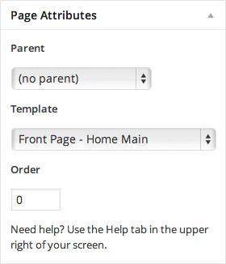
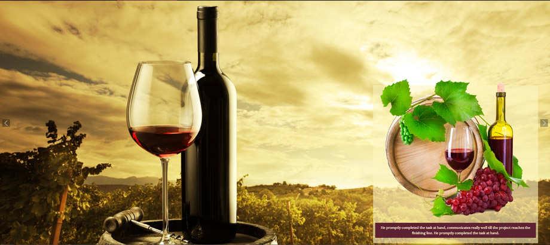
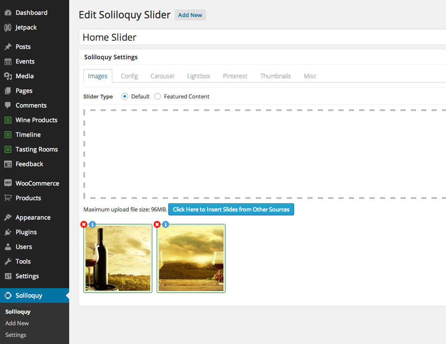
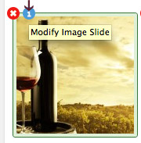
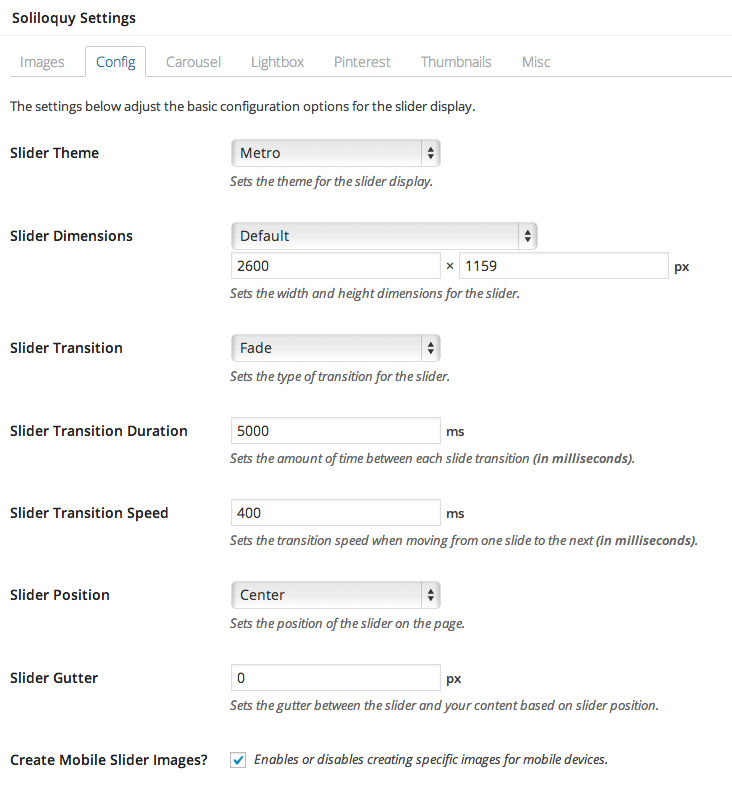
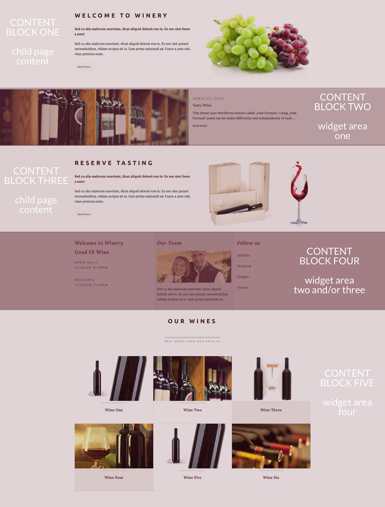
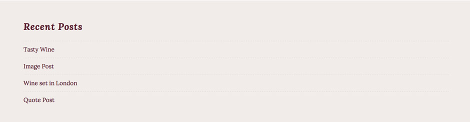

Front Page
4.1 How to add content to the Home Page?
All the content for the front page (and front page versions) you are able to add inside Widgets and the Page Editor. This gives you freedom to add whatever you want. Here we will explain what we added inside the live preview example, but you are free to do it the way you see fits to your needs.
Front page uses "Front Page - Home Main" template from the "Page Attributes". There are different home versions you can choose from the "Page Attributes":
- Front Page - Home Main without effect,
-Front Page - Home with Slider and effect
-Front Page - Home with Slider without effect

4.2 Header Image on the Front Page
To set up, change or delete header image navigate to Appearance > Header and there you'll find the options available for it.
Suggested Image dimension – 2600x1000px.

4.2.1 Slider on the Home with Slider version
To add slider navigate to the Appearance - Widgets and drag and drop slider inside the "Slider Sidebar" widgetized area. Note, you'll need to have Soliloquy slider installed and to set up slider like we explained on the "intro" page!

Navigate to the Soliloquy and click on the "Add New" to create your slider. Upload your images. Size of the images from the live preview are 2600x1159px. You can upload images that are smaller in height.

To add caption to the image click on the "i" icon and add image caption text using this content if you want to have it like in the live preview:

Now you'll need to navigate to the "Config" tab to set up settings for the slider. We are using "Metro" slider theme.

4.3 Home Content Blocks

Home page content is created using pages as a child page of the Home page and widgetized areas.
4.3.1. Content Block One and Content Block Three
This content is created using child pages.

Welcome to Winery
Navigate to the pages and open a new page. Inside Page Attributes choose "Parent: Home" to show the content of this page on the Home page

Content before the "more" tag and the featured image will be shown on the home page.
Reserve Tasting
Navigate to the pages and open a new page. Inside Page Attributes choose "Parent: Home" to show the content of this page on the Home page

Content before the "more" tag and the featured image will be shown on the home page.
4.3.2. Content Block Two
This content is widgetized content area. Please navigate to the Appearance - Widgets and drag and drop "Good Ol' Wine - Recent Posts" widget inside "Widget Area One - Latest Posts" widget area.

4.3.3. Content Block Four
This content is widgetized content area. Please navigate to the Appearance - Widgets and drag and drop widgets inside "Widget Area Two - Three Columns Block" or/and "Widget Area Three - Additional" widget area. We used the same sidebars on Story Page

If ou are using "Widget Area Two" we advise you to have three widgets inside it and the middle content to be higher than the rest, this way it looks best. If you don't want to have middle part on the different background you can use "Widget Area Three" instead. This widget doesn't have the middle column in different background color.
You are able to use just "Widget Area Two" block or "Widget Area Three" block or both at the same time like in this example: http://www.anariel.com/goodoldwinewp/home-without-effect/
Both sidebars are very flexsible.You can create one column, two column, three column layout using widgets.
That means if you drag and drop just one widget inside it, you'll have one column area.

If you drag and drop two widgets inside, you'll have two column area.

If you drag and drop three widgets you'll have three column area.

4.3.4. Content Block Five
This content is widgetized content area. Please navigate to the Appearance - Widgets and drag and drop "Good Ol' Wine - Wine Products" widget inside "Widget Area Four - Wine Products or Timeline Posts". We used the same sidebar on the Home and Story Page. Using "Jetpack Widget Visibility" plugin you are able to use different widgets on different pages using the same sidebar. We used "Wine Products" widget on the home page and "Timeline Posts" on the Story page using the same sidebar and the "Jetpack Widget Visibility" plugin. This feature is great, it gives you freedom in creating different pages with different content.

Before you start to use "Good Ol' Wine - Wine Products and Timeline Posts" widgets you'll need to install and activate "anarielcustompostplugin.zip" from the plugins folder. After that you'll find new menus "Wine Products", "Timeline" and "Tasting Rooms". Read more about setting up posts and pages for the custom post type here:
You need to add posts inside "Wine Products" or "Timeline" to show up on your home page.